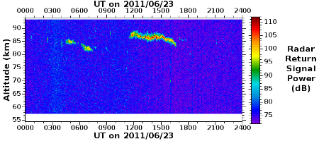

During June and July of each year, the MST radar at Aberystwyth (52.4°N)
commonly detects strong echoes from the mesopause region, i.e. from altitudes
of between 80 and 90 km. These are similar in nature to the Polar Mesosphere
Summer Echoes (PMSEs) which are observed at higher latitudes. Their occurrence
is known to be related to the existence of ice crystals, which form as a
result of the extreme cold (< 150 K) of the mesopause region at this time of year. The
ice crystals are sometimes visible as Noctilucent Clouds (NLCs) during the
hours of twilight. Although radar echoes from the
mesosphere can detected outside of the mid-summer months, such echoes are much-weaker and less-commonly occuring.

Radar scattering mechanism
The mesosphere (i.e. the region of the atmosphere between altitudes of
approximately 50 and 90 km) becomes weakly ionised during daylight hours. MST
radar signals are expected to be backscattered from electron density structures which have
scale sizes of half the radar's wavelength. This is known as the Bragg scale
and is approximately 3 m for MST radars. Such structures will arise from
turbulent mixing across a vertical gradient of electron density. Mesospheric turbulence is expected to be generated as a result of gravity wave breaking.
For most of the year, mesospheric echoes observed by the Aberystwyth MST radar
are weak, rarely-occuring, short-lived, and of narrow vertical extent. They
predominanly occur at altitudes of between 70 and 80 km. At these altitudes,
the 3 m scale is expected to fall within the inertial subrange of
turbulence.
During June and July of each year, the mesospheric echoes are considerably
stronger, more commonly-occurring, and of wider vertical extent than at other
times. They predominanly occur at altitudes of between 80 and 90 km. The
extraordinary strength of Mesosphere Summer Echoes (MSEs) and their polar
counterparts cannot be explained by the standard turbulent backscatter
model. The 3 m scale is expected to fall within the viscous subrange of
turbulence at these higher altitudes. This implies that the magnitude of the
corresponding electron density structures, and hence of the MST radar return
power, should be severely reduced by the effects of molecular diffusion. In
reality, the signal strengths can be up to 3 orders of magnitude larger than
those associated with non-summer echoes.
A modified theory of backscatter has been developed around the observation
that (P)MSEs occur within the same atmospheric region (in terms of latitude,
altitude, and time of year) as Noctilucent Clouds (NLCs). Although the water
vapour concentration of the mesopause region is very low, i.e. approximately a
few parts per million by volume, the mid-summer temperatures become so low
that they can drop below the frost point, which is around 140 - 150 K. It is
thought that electrons which become attached to ice crystals have a reduced
mobility compared to unattached electrons. This leads to a Schmidt number
considerably larger than 1, which results in electron density structures being
able to exist at much smaller scales than is possible for fluctuations in the
velocity field. A detailed and extensive review of PMSE observations and
current understanding can be found in
the paper
of Rapp and Luebken (2004).
The strength of (P)MSEs is too strong to be accounted for without modifying
the above explanation. It is known that The occurrence of (P)MSEs is related
to the existence of ice crystals. These form as a result of the extreme cold
(sometimes below 150 K) of the mid-summer mesopause at middle and high
latitudes. If the ice crystals become sufficiently large, they can be seen
during twighlight hours as "night-shining" Noctilucent Clouds (NLCs). It is
thought that the
During the hours of daylight, the region of the atmosphere above 50 km becomes
increasingly ionised with increasing altitude. MST radar signals can be
backscattered from the mesosphere (i.e. the region of the atmosphere between
altitudes of approximately 50 and 90 km) where they encounter electron density
structures which have scale sizes of half the radar's wavelength (i.e. of a
few metres). Mesospheric echo layers tend to be:
- weak
- sporadically-occurring and rare
- short-lived (no more than a few hours)
- of narrow vertical extent (just a few hundred metres)
- mostly at altitudes of below 80 km
Mesospheric echo layers observed at middle and high latitudes during the
mid-summer months are very different to those observed during the rest of the
year. They tend to be:
- 20 - 30 dB stronger
- commonly-occurring
- long-lived (continuous at polar latitudes and sometimes lasting for more
than 12 hours at mid-latitudes)
- of larger vertical extent (commonly more than a kilometre)
- mostly at altitudes of bewteen 80 and 90 km
Their existence is known to associated with the extremely cold temperatures of
the summer mesopause at these latitudes.
closely related to the occurence of ice
crystals in the vicinity of the mesopause.
Internal Links:
- Return to the top of the page
External Links:
- Return to the top of the page